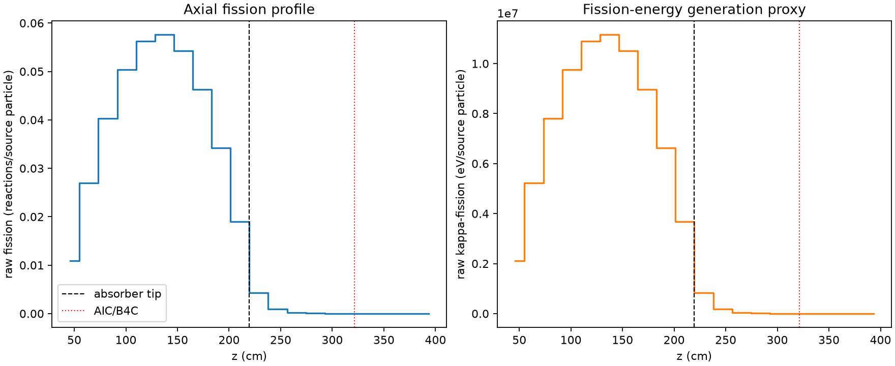
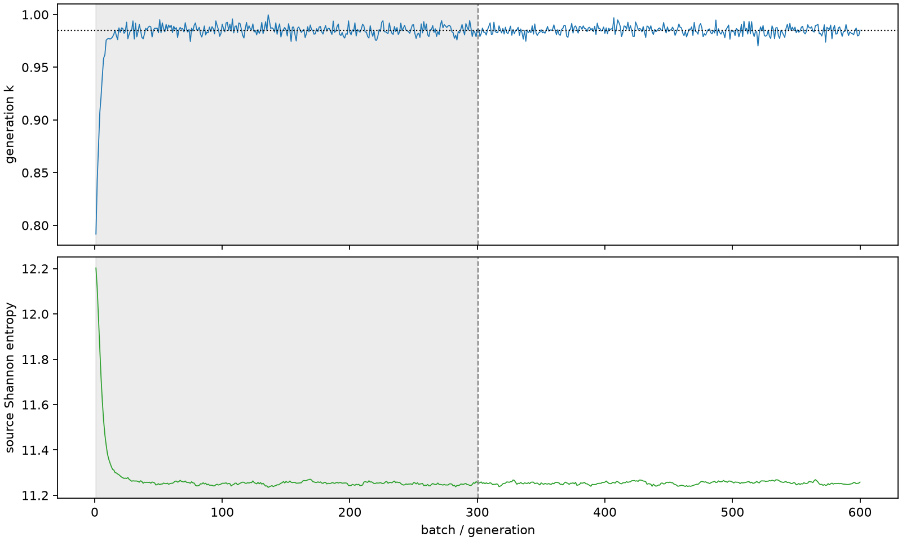

| field | value |
|---|---|
| experiment | V2-ADVISOR_PILOT8-0007 |
| k | 0.9850694017623826 |
| MC standard error | 0.00016333110530299485 |
| seconds | 1196.597308530996 |
| acceptance | not_assessed |
| convergence | review_required |
Completed is output integrity only; physical and statistical review required. Zero tallies do not prove zero production or zero uncertainty.
| diagnostic | value |
|---|---|
| geometric fuel voxels | 5280 |
| zero fission tally voxels | 707 |
| low signal fuel voxels | 1646 |
| low signal fission share | 6.361377020959765e-05 |
| low signal kappa share | 6.36508291926005e-05 |
| important fission share | 0.9501194093002349 |
| previous filter included | 3634 |
| duration estimate s | 1562.5173488400023 |
| actual minus estimate s | -365.92004030900625 |
| fission relative MC error | statistics |
|---|---|
| all_geometric_fuel | {"voxels": 5280, "positive_mean_voxels": 4573, "zero_mean_voxels": 707, "undefined_relative_error_voxels": 707, "median": 0.010629182017446701, "p95": 0.9145772476414339, "maximum": 1.0000000000000002} |
| low_signal | {"voxels": 1646, "positive_mean_voxels": 939, "zero_mean_voxels": 707, "undefined_relative_error_voxels": 707, "median": 0.628692979000687, "p95": 1.0, "maximum": 1.0000000000000002} |
| important_95pct | {"voxels": 2323, "positive_mean_voxels": 2323, "zero_mean_voxels": 0, "undefined_relative_error_voxels": 0, "median": 0.006740529478377052, "p95": 0.010174080493966477, "maximum": 0.011872727467624675} |
| outside_previous_filter | {"voxels": 1646, "positive_mean_voxels": 939, "zero_mean_voxels": 707, "undefined_relative_error_voxels": 707, "median": 0.628692979000687, "p95": 1.0, "maximum": 1.0000000000000002} |
| kappa_fission relative MC error | statistics |
|---|---|
| all_geometric_fuel | {"voxels": 5280, "positive_mean_voxels": 4573, "zero_mean_voxels": 707, "undefined_relative_error_voxels": 707, "median": 0.01061420555176392, "p95": 0.9152607700407067, "maximum": 1.0000000000000002} |
| low_signal | {"voxels": 1646, "positive_mean_voxels": 939, "zero_mean_voxels": 707, "undefined_relative_error_voxels": 707, "median": 0.6284023862622693, "p95": 1.0, "maximum": 1.0000000000000002} |
| important_95pct | {"voxels": 2323, "positive_mean_voxels": 2323, "zero_mean_voxels": 0, "undefined_relative_error_voxels": 0, "median": 0.0067311498482872205, "p95": 0.010160766405854242, "maximum": 0.011856715942262631} |
| outside_previous_filter | {"voxels": 1646, "positive_mean_voxels": 939, "zero_mean_voxels": 707, "undefined_relative_error_voxels": 707, "median": 0.6284023862622693, "p95": 1.0, "maximum": 1.0000000000000002} |
| axial bin | fission share | kappa-fission share |
|---|---|---|
| 1 | 0.027097343413507783 | 0.027098790690377718 |
| 2 | 0.06710871541001723 | 0.06710803010079162 |
| 3 | 0.10034759798004765 | 0.10034701559154707 |
| 4 | 0.12552962749548993 | 0.12552846017333766 |
| 5 | 0.14005040552164172 | 0.1400490123482523 |
| 6 | 0.14343146556245923 | 0.14343056503172616 |
| 7 | 0.13513208713116961 | 0.13513091595704688 |
| 8 | 0.11522693065571818 | 0.11522586397558174 |
| 9 | 0.08510457876175695 | 0.08510393223105105 |
| 10 | 0.04736738704808164 | 0.04736762898835098 |
| 11 | 0.01057646232166503 | 0.010580862732734375 |
| 12 | 0.002326908799737305 | 0.002328082243134496 |
| 13 | 0.0005433905839541517 | 0.0005436511915960498 |
| 14 | 0.0001223965542752754 | 0.00012246599854472164 |
| 15 | 2.779167768165927e-05 | 2.7805971066122785e-05 |
| 16 | 5.9686247694936325e-06 | 5.972167040258384e-06 |
| 17 | 7.033840137245715e-07 | 7.052027143890151e-07 |
| 18 | 2.2320734203409834e-07 | 2.233134642899469e-07 |
| 19 | 1.5866671421684156e-08 | 1.6091642028393412e-08 |
| 20 | 0.0 | 0.0 |
Histories include the inactive-to-active transition at batch 300. kappa-fission approximates fission energy production, not total heat deposition.

